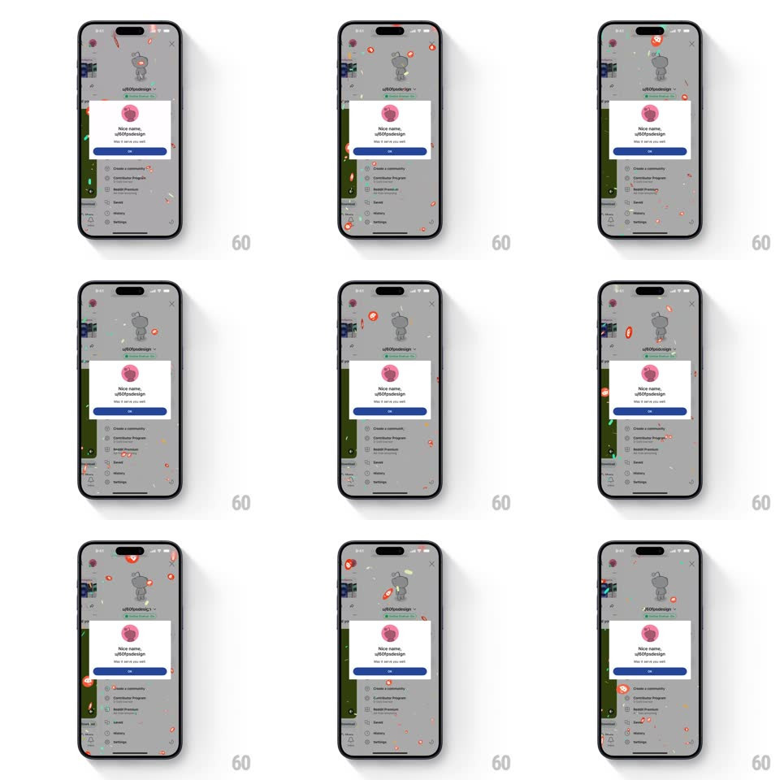

Media
Frame-by-frame

Rebuild this interaction 1:1: Reddit's username confirm confetti - the "Nice name, u/60fpsdesign!" confirmation card pops in over the dimmed profile while branded confetti (Snoo heads and orange-pink shards) bursts from the top and rains down around it.

Rebuild this interaction 1:1: Reddit's username confirm confetti - the "Nice name, u/60fpsdesign!" confirmation card pops in over the dimmed profile while branded confetti (Snoo heads and orange-pink shards) bursts from the top and rains down around it. ## Integration Integration: stack-agnostic spec - springs given as stiffness/damping, timed motions as duration + curve; map every value to your framework and animation library of choice. ## Scene The dimmed Reddit profile (Snoo avatar, u/60fpsdesign handle, karma chips, menu rows) behind a centered white card: pink circular avatar, bold "Nice name, u/60fpsdesign!", the caption "May it serve you well.", and a full-width blue "OK" pill. ## Motion spec Pattern: modal pop + celebratory particle rain. - The card pops in: scale 0.85 -> 1 with fade, spring ~420/18 (small overshoot, 300ms) as the background dims (black 45%, 200ms). - At the same moment the confetti fires: a burst of particles - Snoo head icons, orange and pink rounded shards - spawns along the top edge (60-90 pieces) and falls with gravity. - Each particle tumbles (random spin +/-180deg/s) and sways (horizontal sine wobble, random phase) with slight size variance (0.6x-1.4x) for depth. - The fall lasts about 2.5s - particles fade out in their last 20% of travel below the card. - The card holds perfectly still through the rain - the celebration happens around it. ## Calibration - Confetti density peaks in the first second - a burst, not a snowstorm. - Snoo pieces are the minority (about 1 in 6) - they read as Easter eggs among the shards. ## Reduced motion Card fades in; no particles. ## Don't miss - Confetti falls in front of the dimmed profile but behind nothing - it passes over the card too. - The OK button is immediately tappable - the confetti never blocks the dismissal.